Landscape on Svalbard.
|
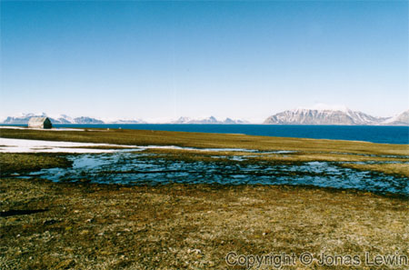What
strikes me here, is the solitude of the small cabins/houses.
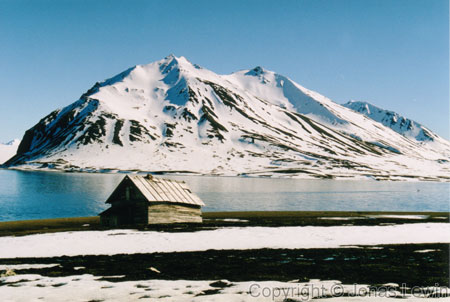Do
you feel like living here? Pease remember that this is summer!
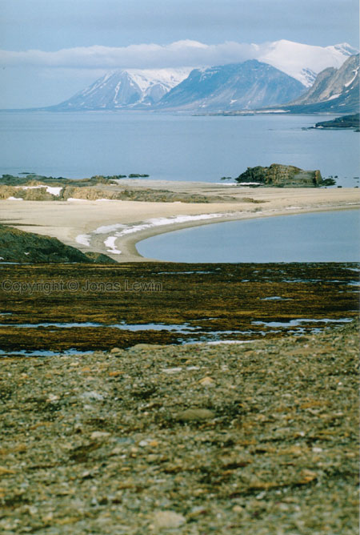
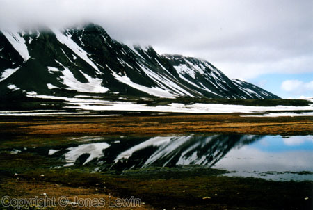Normally
water makes everything green...
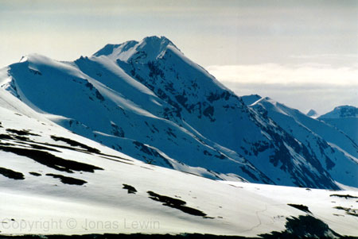
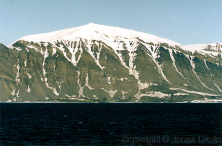
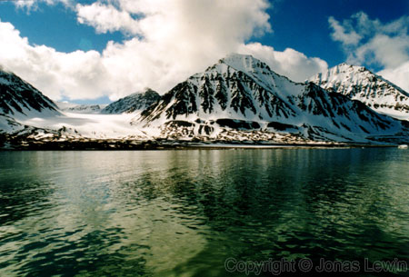
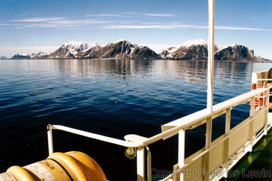To
see the landscape from the boat is quite nice.
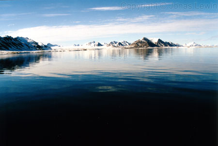
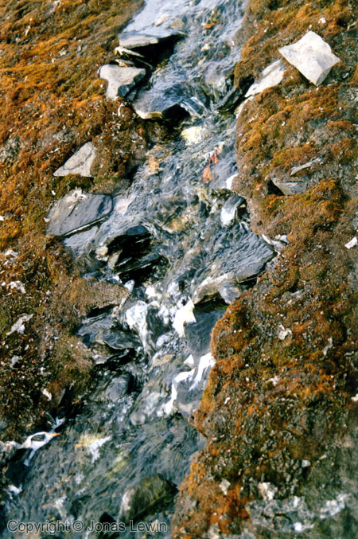If
there's fresh cold running water, it it supposed to make the vegetation
grow.
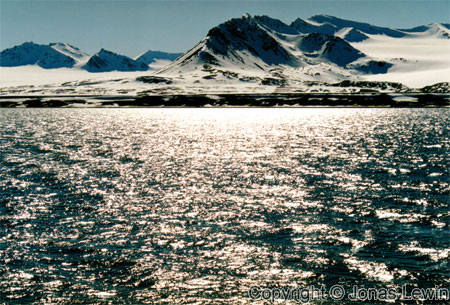
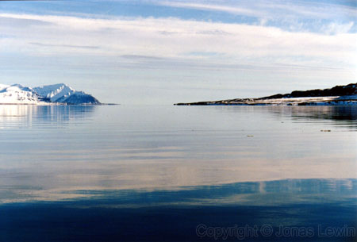The
earth is flat, and this is where the world ends. You can clearly see (or at
least imagine) that the water is running over the edge here, and into the
vast nothingness.
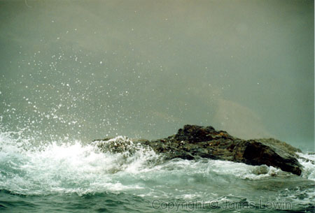On
Bear Island, the weather was sometimes less calm.
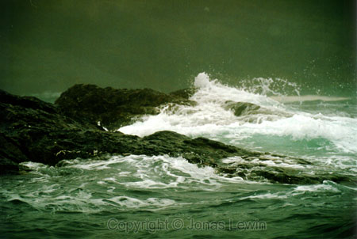 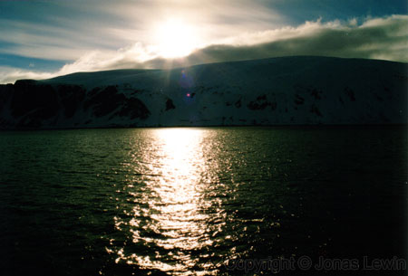19th of June 2000. 1 minute pas midnight. This is as low the sun will get this day. |